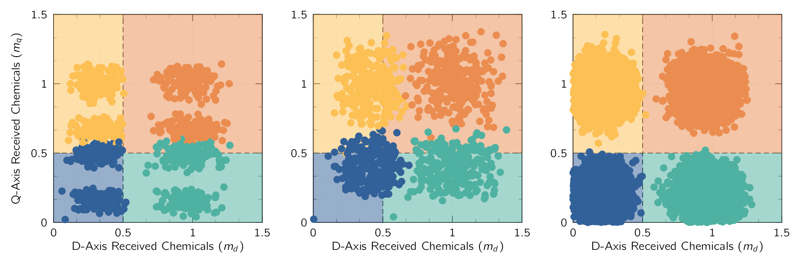
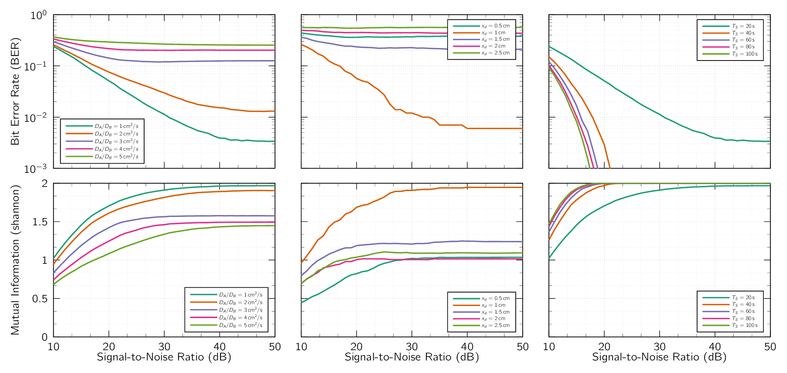

To understand the feasibility of the detection of chemicals, a bit-error-rate and mutual information study was conducted. While a scent landmark can’t generate a stream of bits similar to a transmitter, nevertheless it is an information source and therefore a BER analysis would provide with the error probability of information or how much information can be embedded using a scent landmark using ChQAM. The simulation results can be seen in Fig. 4 with detected values in Fig. 3. The parameters of simulation are given in Table 2.
| Parameters | Diffusion | Distance | Symbol |
| Seed | 42 and 89 | 42 and 89 | 42 and 89 |
| Mass | 1 | 1 | 1 |
| Levels | 2 | 2 | 2 |
| Bit Counts | |||
| Diffusion | [0.5, 1, 1.5, 2.0 ,2.5] | ||
| Distance | 1 | [0.5, 1, 1.5, 2.0 ,2.5] | 1 |
| Time | 30 | 30 | [30, 60, 90, 120, 150] |
In the study, three primary parameters were tested: diffusion coefficient, distance, and listening time (i.e., symbol time). In the diffusion study the value is kept at with each iteration the ratio of the was changed. The simulation range for Signal-to-Noise Ratio (SNR) was kept from 10 to 50 dB.
As can be seen, the diffusion ratio () plays an important roles in the performance of mutual information or the error rate of detection, whereas distance and symbol time play a significantly more prominent role as to be expected. From the perspective of diffusion, this implies the correct decision of diffusion constant for the landmarks needs to be explicit as slight variations on the diffusion parameters can presents an asymmetrical detection of bits which can cause additional detection of errors which can also be seen in Fig. 3, sub-figure (a). As can be seen in the figure, the increase of the diffusion coefficient, while increases the propagation speed, also increases the dispersion of the chemical and causes the signal to degrade, which in the end causes the signal to be wrongly classified.
In regards to the symbol length, or the duration in which signal is being read, the improvements are significant as more time is devoted to reading the signal. Increasing the signal reading time from 30 to 60 s increases the readable information content from 1.5 to 1.8 shannon with SNR being 15 dB. This shows that, under less than ideal environments for chemical communication, a longer period of listening can produce higher information content to be read accurately. The SNR shows significant rate of improvement up to 30 dB with additional improvement gives incremental gain.
